Основная для вас информация находится ниже. Ознакомьтесь с ней в первую очередь.
Полезные советы при подавленном состоянии:
1. Наладить режим сна. Старайтесь ложиться спать и вставать в одно и то же время каждый день. Сон - залог морального и физического здоровья, поэтому им не стоит пренебрегать. Если со сном тяжело, можете засыпать под спокойную музыку или природные звуки на фоне, зашторьте плотно окна и выключите весь свет. Возможно, вам также поможет стакан теплой воды на ночь и пару часов "спокойствия" перед сном. Отложите все дела на следующий день, либо решите их заблаговременно до сна.
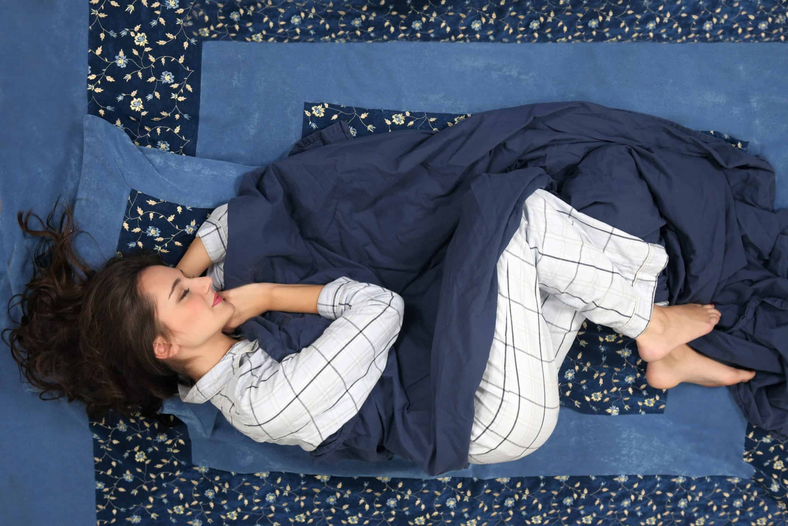
2. Заниматься физическими упражнениями. Регулярная физическая активность помогает улучшить настроение и снизить уровень стресса. Необязательно нагружать себя слишком сильно, будет достаточно в первое временя даже простой разминки после сна - сделать зарядку для рук и ног, также особое внимание уделите спине и шее.
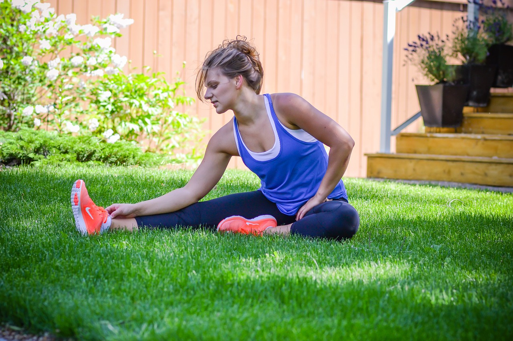
3. Питаться здоровой пищей. Правильное питание может помочь повысить энергию и улучшить общее самочувствие. Ограничивать свое питание не стоит, если вам всё же хочется вредных продуктов, то их есть можно. Просто знайте всему меру и питайтесь тогда, когда правда хотите есть. Также, можно пройти простой тест на "физический голод" и "психологический голод", если вы не до конца уверены, что правда проголодались.

4. Общаться с друзьями и близкими людьми. Социальная поддержка очень важна для нашего психического здоровья, но никогда не забывайте про себя и уделяйте время самому себе. Побыть в одиночестве можно и нужно, как и пообщаться со своим окружением. Возможно, многие люди из вашего окружения кажутся назойливыми или скучными, но это не всегда так. Постарайтесь провести время с ними, но если все же морально или физически тяжело, то завершите диалог. Если же хочется чего-то нового в жизни, то никогда не бойтесь заводить новые знакомства. Самый простой вариант, заобщаться с кем-то, кого вы часто встречаете на учёбе, к примеру, либо же с тем, кто интересуется теми же темами, что и вы.
5. Развлекаться хобби или новыми увлечениями. Это поможет отвлечься от негативных мыслей и расслабиться. Иногда полезно попробовать себя в чем-то новом, нежели сидеть без дела. Попробуйте отталкиваться от ваших прошлых интересов и искать что-то схожее, если тяжело принимаете перемены в своей жизни. Старайтесь социализироваться с помощью своих хобби - находите какие-то кружки, мастер-классы или простые встречи, где люди будут делиться своим прогрессом в данном увлечении.
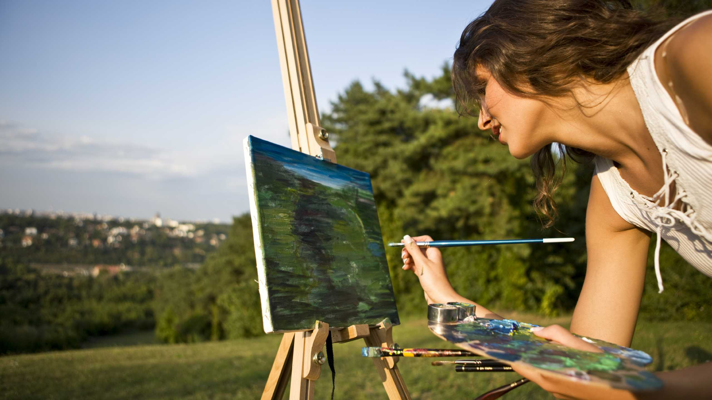
6. Проводить время на свежем воздухе. Пребывание на свежем воздухе также может помочь укрепить вашу иммунную систему, что особенно важно при подавленном состоянии. Прогулки на природе могут помочь снять стресс, развеять тяжёлые мысли. Выделяйте хотя бы полчаса на прогулки по улице, выходите за пределы дома без какой-то определенной цели. Если же вам тяжело выходить в людные места, выбирайте более тихие места для себя, к примеру, парки. Однако стоит отметить, что каждый человек индивидуален, поэтому эффект от пребывания на свежем воздухе может различаться. Важно найти подходящий вид активности на свежем воздухе, который будет приятен и полезен конкретному человеку.
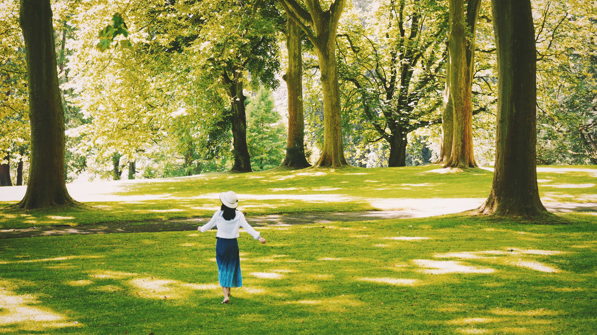
У меня паническая атака, что делать?
Паническая атака — это состояние, которое сопровождается сильным чувством страха и тревоги, которое может возникнуть внезапно и без видимой причины. Не у всех панические атаки явные, однако, это не повод отрицать их существование.
Вот вам несколько шагов, которые могут помочь вам справиться с панической атакой:
1. Признайте, что у вас паническая атака. Это первый шаг к тому, чтобы начать управлять своим состоянием. Наверное, это самый-самый трудный пункт, но начинать нужно именно с него!
2. Найдите тихое и спокойное место, где вы можете сесть или лечь. Постарайтесь расслабиться и сосредоточиться на своем дыхании. Медленно и глубоко вдохните через нос, затем медленно выдохните через рот. Повторяйте этот процесс до тех пор, пока не почувствуете себя лучше. Если упражнение с дыханием не помогает, то можно считать окружающие себя предметы! Например, сколько вокруг вас сейчас вещей определённого цвета или формы, этот метод также поможет расслабиться.
3. Не всем подходить стратегия "побыть наедине с самим собой". Поэтому, если возможно, попросите кого-то о помощи. Разговор с другим человеком может помочь отвлечься от своих мыслей и уменьшить чувство страха. Лучше всего выбирайте близкого вам человека, он точно сможет завести непринуждённый диалог с вами.
4. Если у вас есть лекарства, которые были назначены врачом для лечения панических атак, примите их согласно инструкции. Не забывайте о назначенном лечении! Оно очень важно, поэтому всегда следуйте инструкции по применению лекарств или же рецепту, который выписал вам лечащий врач.
5. После того как вы почувствуете себя лучше, попытайтесь понять, что вызвало вашу паническую атаку. Это поможет избежать подобных ситуаций в будущем! По возможности избегайте раздражителей, ведь так вам будет намного легче и спокойнее.
6. Обратитесь за профессиональной помощью к психотерапевту или психиатру, если панические атаки продолжаются или становятся слишком частыми. Панические атаки - не шутка, они могут привести к серьёзным последствиям. Не бойтесь обращаться за помощью к профессионалам, ведь они всегда поймут и помогут вам с вашими проблемами.
Места с психологической помощью в Новосибирске:
Мест с бесплатной помощью не так много, но они всё же есть. Я приложу ниже некоторые центры психологической помощи, которые находятся в разных районах нашего города, а также ссылки на группы в соцсети Вконтакте, где можно сразу записаться на посещение.
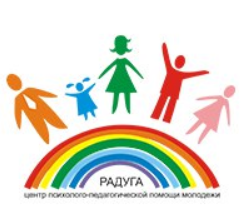 Советский район: Центр психолого-педагогической помощи молодежи «Радуга».
Адрес: ул. Кутателадзе, 16.
Контактный телефон: 204-90-73, 204-90-78.
Группа Вконтакте: Центр "Радуга"
Центральный район: Социально-психологический центр "Ника".
Адрес: Красный проспект , 73.
Контактный телефон: 220-15-00.
А также по адресу: ул.Ломоносова, 59. Контактный телефон: 201-50-09.
Группа Вконтакте: Центр"Ника"
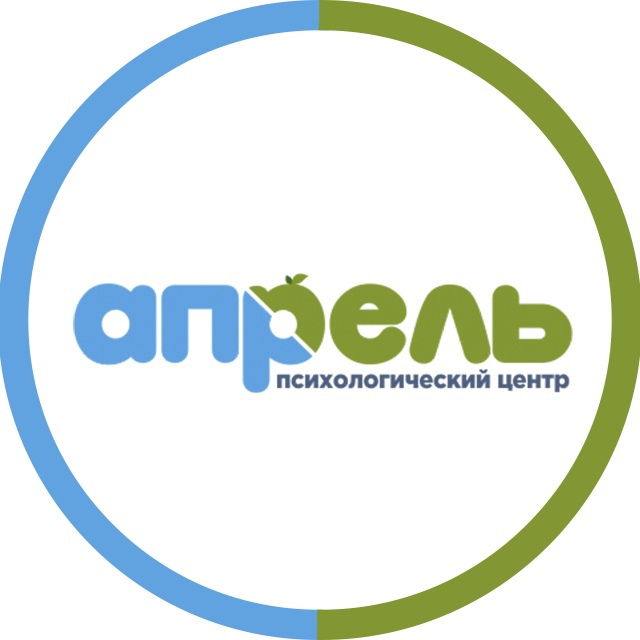 Дзержинский район: Центр психолого-педагогической поддержки "Апрель".
Адрес: просрект Дзержинского, 79.
Контактный телефон: 278-59-18.
Группа Вконтакте: Центр "Апрель"
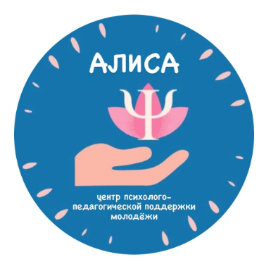 Октябрьский район: Центр психолого-педагогической поддержки "Алиса".
Адрес: ул.Никитина, 15.
Контактный телефон: 266-63-48.
Группа Вконтакте: Центр "Алиса"
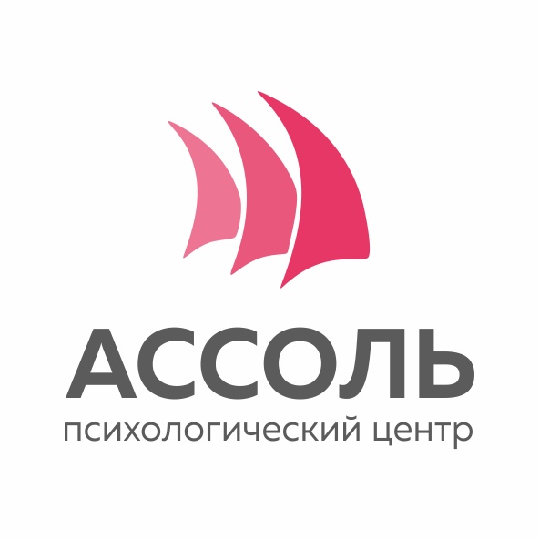 Первомайский район: Психологический центр "Ассоль".
Адрес: ул. Маяковского, 4 (каб.411-423).
Контактный телефон: 337-38-95, 337-02-51.
Группа Вконтакте: Центр "Ассоль"
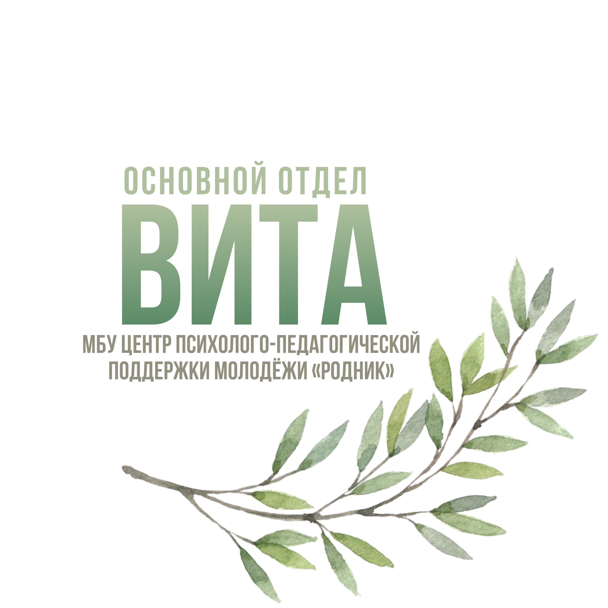 Заельцовский район: Центр психологической поддержки "Вита".
Адрес: Красный проспект 161/1.
Контактный телефон: 225-98-11.
Группа Вконтакте: Центр "Вита"
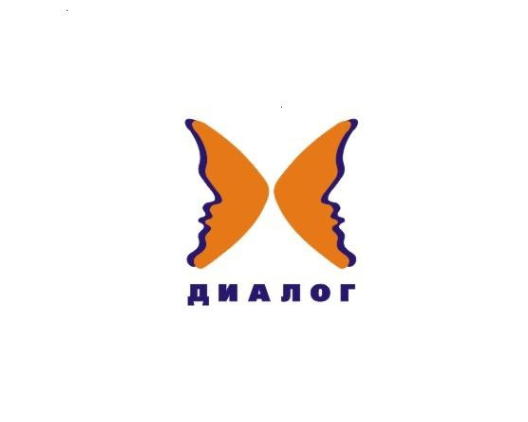 Калининский район: Психологический центр "Диалог".
Адрес: ул. Народная, 69.
Контактный телефон: 271-12-10.
Группа во Вконтакте отсутствует.
Железнодорожный район: Отдел "Коралл" Центра психолого-педагогической помощи молодежи "Родник".
Адрес: ул. Серебренниковская, 23.
Контактный телефон: 223-72-48.
Группа Вконтакте: Отдел "Коралл"
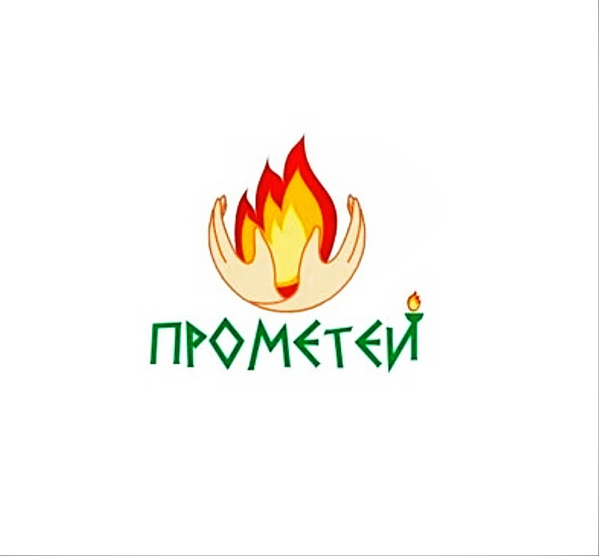 Ленинский район: Психологический центр "Прометей".
Адрес: ул.Широкая, 137/3.
Контактный телефон: 341-11-74.
Группа во Вконтакте: Центр "Прометей"
Кировский район: Отдел "Пеликан" Центра психолого-педагогической помощи молодежи "Родник".
Адрес: ул.Зорге, 42.
Контактный телефон: 342-26-90.
Группа во Вконтакте: Отдел "Пеликан"
Психологическая помощь в режиме онлайн:
1. Платформа "Smart" - Обратиться за помощью.
2. Платформа "Psyholorgam" - Обратиться за помощью.
3. Платформа "МыРядом.Онлайн" - Обратиться за помощью.
4. Платформа "ТвояТерритория.Онлайн" - Обратиться за помощью.
5. Платформа "Ясно" - Обратиться за помощью.
6. Платформа "Брейн Билд" - Обратиться за помощью.
7. Платформа "ПомощьРядом.РФ" - Обратиться за помощью.
8. Платформа "ПроПсиТин" - Обратиться за помощью.
9. Платформа "МыРядом2020" - Обратиться за помощью.
10. Платформа "НеТерпи" - Обратиться за помощью.